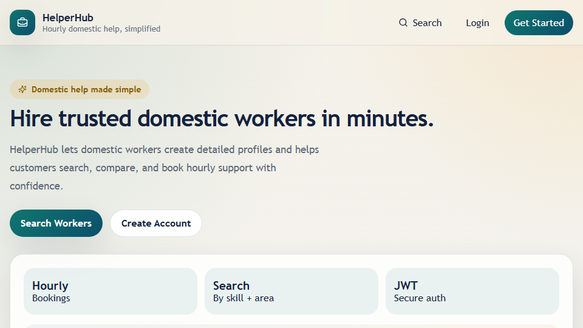

HelperHub
A community help-matching platform where requests move through a real lifecycle — open, claimed, resolved — validated server-side, not just tracked as a status label in the UI.

Problem
A help request isn't a static record — it moves through a lifecycle: posted, claimed by a helper, resolved. If status is just a field the client can set, two helpers can claim the same request at once, or a request can jump straight from "open" to "resolved" with no one having claimed it. The status has to be a real state machine enforced by the server, not a label the UI happens to display.
Constraints
- A request can only move through valid transitions (open → claimed → resolved) — no state can be skipped or reversed by a client-crafted request.
- Only the request's owner or its assigned helper should be able to act on it, not any authenticated user.
- Built on the same MERN foundation as VibeConnect and CampusCare, to see which parts of it — auth, validation, deployment — were genuinely reusable versus specific to each domain.
Architecture
React frontend · Node/Express REST API · MongoDB · JWT auth · request status-transition validation living in the API layer rather than the client.
Key Engineering Decision
Each request carries an explicit status enum with transition rules enforced in the API layer — a request can move from open to claimed to resolved, and nothing else, regardless of what a client sends. Endpoints are scoped to whether the caller is the request's owner or its assigned helper, so a helper can't resolve someone else's request even with a valid token.
Trade-offs
The state machine is linear with three states — it has no path for a claimed request that's abandoned or disputed, which a real production version would need (a fourth "expired" or "cancelled" state, plus a scheduled job to enforce timeouts). Scoped correctly for the problem it demonstrates; not a complete lifecycle for a real marketplace.
Lessons Learned
The status state machine was the one genuinely new piece of engineering here — everything else (auth, validation, deployment config) reused the previous two projects' foundation almost directly, which made the difference in build time obvious. The other takeaway: building the same stack a third time is what actually reveals which architectural decisions were load-bearing and which were just habit.